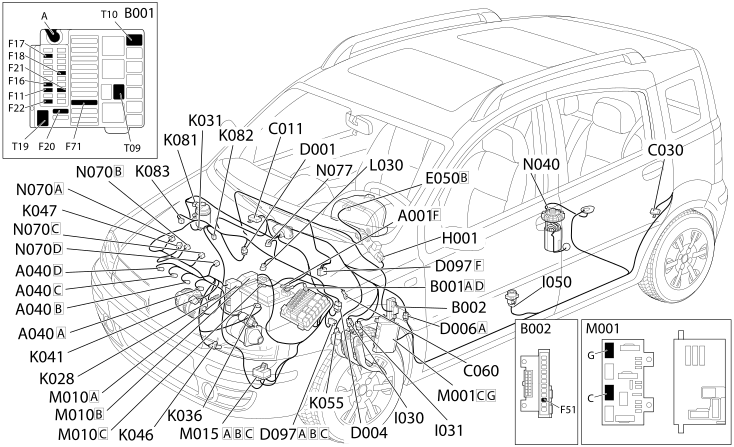

E5050 DIESEL ENGINES ELECTRONIC MANAGEMENT - Location of components
- Path
- Electrical equipment > 1 ELECTRICAL FUNCTIONS > E50 ENGINE CONTROL AND MANAGEMENT SYSTEMS > E5050 DIESEL ENGINES ELECTRONIC MANAGEMENT > E5050 DIESEL ENGINES ELECTRONIC MANAGEMENT - Location of components
- Kind
- topic
- Applies to
- all engines; all production periods
- Interactive page
- https://sloeber94.github.io/elrnDB-fPnd/en/#/2751591
Applies to: all engines; all production periods
Location of components

COMPONENTS
Component code | Name | Assembly reference |
|---|---|---|
Battery | ||
Heater plugs | ||
Engine compartment junction unit | ||
engine compartment junction unit | ||
Junction unit under dashboard | ||
Right front earth | - | |
Left rear earth | - | |
Injection ECU earth | - | |
Front dashboard coupling | - | |
front / dashboard coupling | - | |
Front / engine coupling | - | |
Front/engine connection | - | |
Front rear coupling | - | |
Front / rear coupling | - | |
Short circuiting coupling | - | |
Instrument panel | ||
Ignition switch | ||
Brake pedal switch | - | |
Brake pedal switch | ||
Clutch pedal switch | - | |
Inertial switch | ||
Engine oil pressure sensor | - | |
Engine oil pressure sensor | ||
Water in diesel filter sensor | - | |
Engine coolant temperature sensorsender unit | - | |
Engine coolant temperature sensorsender unit | ||
Engine coolant temperature sensorsender unit | ||
Air flow meter | ||
Rpm sensor | - | |
Rpm sensor | ||
Rpm sensor | ||
Timing sensor. | - | |
Timing sensor. | ||
Timing sensor. | ||
Accelerator pedal potentiometer | - | |
Accelerator pedal potentiometer | ||
Fuel temperature sensor | - | |
Turbocharging sensor | ||
Fuel pressure sensor | ||
EGR solenoid | ||
Body computer | ||
Engine management control unit | - | |
Engine management control unit | ||
Engine management control unit | ||
Plug preheating control unit | ||
Fuel pump and sender unit | ||
Injector | - | |
Injector | ||
Injector | ||
Fuel pressure regulator |
Topics linked from this page (49)
- 1040A fuel tank and components
- 1056B multi-point injection system (mpi)
- 1060E diesel pressure pump
- 1060F injectors and lines
- 1060G pressure pump electric control
- 1068A ACCELERATOR PEDAL CONTROL
- 1080C exhaust gas recirculation system (e.g.r.)
- 1084A indicators/check devices
- 5505A multi-function components
- 5505C vehicle compartment wiring
- 5510C coil, ecu, sensors
- 5520A ignition switch
- 5520C cold starting system (diesel engines)
- 5530B battery and leads
- 5550D BRAKE AND REVERSING LIGHTS
- 5560B analogue control panel
- E50 ENGINE CONTROL AND MANAGEMENT SYSTEMS
- N077 REGOLATORE DI PRESSIONE COMBUSTIBILE (ENGINE)
- A001 BATTERY
- A040 HEATER PLUGS
- B001 JUNCTION UNIT
- B002 JUNCTION UNIT UNDER DASHBOARD
- C011 RIGHT FRONT EARTH
- C030 LEFT REAR EARTH
- C060 INJECTION CONTROL UNIT EARTH
- D001 FRONT/DASHBOARD COUPLING
- D004 FRONT/ENGINE COUPLING
- D006 FRONT/REAR COUPLING
- D097 SHORT CIRCUITING COUPLING
- H001 IGNITION SWITCH
- I030 BRAKE PEDAL SWITCH
- I031 CLUTCH PEDAL SWITCH
- I050 INERTIA SWITCH
- K028 ENGINE OIL PRESSURE SENSOR
- K031 WATER IN DIESEL FILTER SENSOR
- K036 ENGINE COOLANT TEMPERATURE SENSOR/SENDER UNIT
- K041 AIR FLOW METER
- K046 RPM SENSOR
- K047 TIMING SENSOR
- K055 ACCELERATOR PEDAL POTENTIOMETER
- K081 FUEL TEMPERATURE SENSOR
- K082 SUPERCHARGING SENSOR
- K083 FUEL PRESSURE SENSOR
- L030 EGR SOLENOID VALVE
- M001 BODY COMPUTER
- M010 ENGINE MANAGEMENT ECU
- M015 PLUG PREHEATING CONTROL UNIT
- N040 FUEL PUMP AND LEVEL GAUGE
- N070 INJECTOR